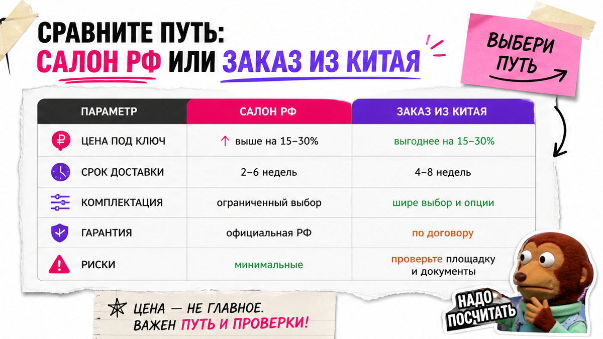
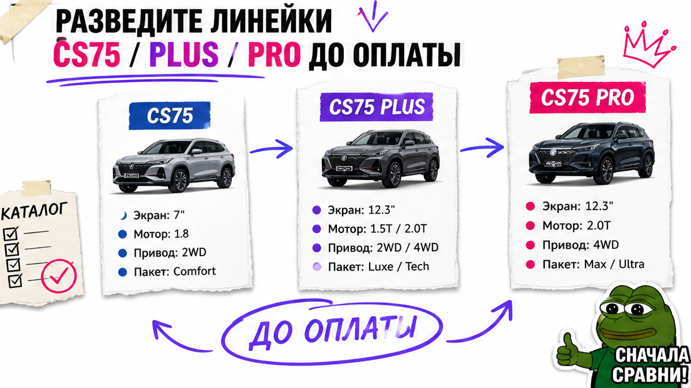
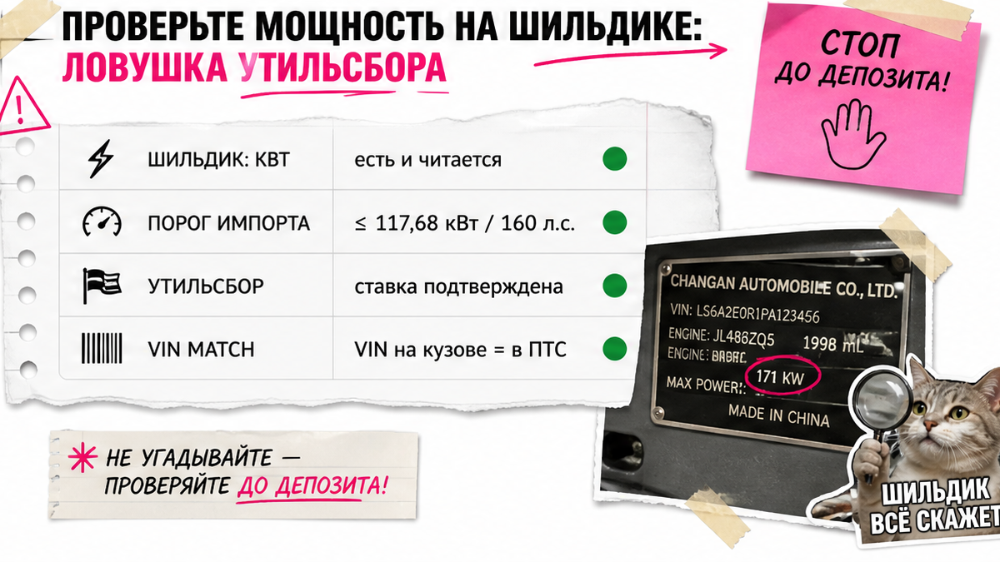

Боль Ивана из Новосибирска знакома: хочет CS75 Plus дешевле дилера и уже тянется к депозиту, а в чате пишут "топ 1.5T, почти как в России". Друг спросил про киловатты на шильдике и Plus vs Pro – ответа нет. Ниже чек-лист до денег: развести линейки, поймать ловушку мощности, собрать документы и пройти маршрут через Владивосток, чтобы не купить кота в мешке.
Инсайт до депозита: CS75, CS75 Plus NEW и CS75 Pro – разные машины, не "уровни одной модели". До депозита нужны VIN и фото шильдика с кВт: порог льготного утильсбора – 117,68 кВт (160 л.с.), а китайский 1.5T около 192 л.с. уже выше. Смету "под ключ" считайте в каталоге. Маршрут: выкуп → порт → море → СВХ Владивосток → СБКТС → ЭПТС.
Мы в Авто-Сейлс во Владивостоке часто видим одну проблему: десять вкладок с "Люкс/Техно" и китайскими trim-именами, а по шильдику – тишина. Сначала цифры и комплектация, потом юани. Скрин без кВт – ещё не сделка.

Кажется, что Китай – "только для перекупов", а салон всегда дороже – и из-за этого легко ошибиться. На практике выбор зависит от задачи, а не от стыда новичка.
Салон РФ логичен, если нужен сертифицированный CS75 Plus NEW с полным приводом 2.0T 235 л.с., 8AT и дилерской сетью. В линейке РФ – Люкс и Техно: мотор и привод одинаковые, доплата Техно – за комфорт и медиа (Zero Gravity, вентиляция, Pioneer 14, автопарковка), а не за другой двигатель.
Заказ из Китая имеет смысл, когда нужна другая модификация (например, 1.5T, HEV или иной набор опций) и вы готовы ждать логистику и собрать проверки до оплаты. Типичная ошибка – гнаться за ценой ниже дилера и игнорировать мощность.
Сделайте: запишите сценарий (город/зима/семья) и нужен ли полный привод. Не делайте: выбирать Китай только потому, что скрин красивее прайса салона.

Plus NEW и Pro с похожими индексами – не рестайлинг одной машины. Это разные автомобили: моторы, коробки, привод и аудитория. Пока путаете названия – цены сравнивать рано.
| Параметр | CS75 (база) | CS75 Plus NEW (РФ) | CS75 Pro |
|---|---|---|---|
| Роль | Базовая линейка, не путать с Plus | Флагманский кроссовер РФ: Люкс/Техно | Отдельная модель, не "улучшенный Plus" |
| Мотор (ориентир) | Смотреть карточку, не заголовок | 2.0T 235 л.с., 390 Н·м | 1.5T 181 л.с., 280 Н·м |
| КПП / привод | По карточке | 8AT Aisin, полный привод | 7DCT, передний привод |
| Салон | Обычно 5 мест | 5 мест, акцент на комфорт | Есть 5- и 7-местные версии |
| Китайский нюанс | Trim-имена отличаются от РФ | В КНР бывают 1.5T ~192 л.с., 2.0T до ~245, HEV | Не подменять объявлением "почти Plus" |
Выпишите из карточки: точное имя линейки, мотор, коробку, привод и число мест. Рекламный заголовок "топ комплектация" не считается.
Сделайте: выбрать линейку до чата с продавцом. Не делайте: считать Pro улучшенным Plus – это другая машина.

Шильдик – табличка на кузове или в проёме двери с VIN и мощностью в киловаттах. Для утильсбора смотрят кВт, а не "лошади" из рекламы. Льготный контур для физлица завязан, в том числе, на ДВС до 117,68 кВт (160 л.с.) и объём до 3000 см³. Выше порога – другая логика ставок.
Неприятный факт: китайский 1.5T около 192 л.с. (примерно 141 кВт) уже выше льготного порога. "Маленький мотор" не равен "дешёвому утилю". Версии 2.0T около 233–245 л.с. тем более не про льготу. С 01.01.2026 коммерческие коэффициенты утиля выросли; без шильдика цифру не докажете.
Владельцы Plus прошлых лет в РФ часто жаловались на отсутствие полного привода. Для зимы AWD в чек-листе – must-have. В РФ Plus NEW идёт с полным приводом; в китайских объявлениях привод читайте отдельно.
Сделайте: до депозита запросить фото шильдика с кВт и сверить с порогом 117,68 кВт. Не делайте: верить скрину "1.5T, утиль льготный" без таблички. Смету платежей берите в каталоге avto-sales125.ru – статичный калькулятор в статье быстро устаревает.
Готовность кинуть деньги по красивому объявлению – самая дорогая привычка. Ниже минимум, без которого депозит не обсуждаем.
Сделайте: депозит только после пакета проверок. Не делайте: оплату "за бронь" по скрину без VIN. Используйте стоп-лист как чеклист, а не как украшение в заметках.
Коротко по терминам. СВХ – склад временного хранения у таможни после прибытия. СБКТС – свидетельство о безопасности конструкции (лабораторный допуск). ЭПТС – электронный паспорт ТС, без него не поставить на учёт.
Схема маршрута:
Выкуп в КНР → Порт → Море во Владивосток → СВХ → Таможня/выпуск → СБКТС → ЭПТС → Выдача или автовоз
Ориентиры (не гарантия "ключей через две недели"): подготовка в КНР – несколько дней; море порт–порт часто 4–10 дней; цикл до порта/СВХ нередко 15–25 дней; таможня – ориентир 3–10 дней; дальше СБКТС и ЭПТС. До центра РФ часто 1,5–3 месяца. Обещание "под ключ за 20 дней" без разбивки – красный флаг.
Детали по машине уточняйте в Telegram avtosales125 с чек-листом: линейка, кВт, VIN, нужен ли AWD.
Сделайте: просить сроки по этапам, а не одну цифру. Не делайте: планировать отпуск "под получение" через две недели после оплаты.
Если нужен сертифицированный Plus NEW 4WD быстро и с дилерской сетью – сравните салон РФ. Если цель – китайская модификация под индивидуальный расчёт – идите в каталог с заполненным стоп-листом.
Сделайте: ставить лот на паузу при любом флаге из списка. Не делайте: "договариваться потом" про мощность и документы.
Критерий успеха простой: заполнен стоп-лист – модель и поколение сверены, кВт с шильдика записаны, понятно "льгота до 160 л.с. или нет", депозит не ушёл без фото таблички и пакета проверок. Вы сможете выбрать линейку, проверить мощность и собрать маршрут выкуп → порт → СВХ → СБКТС/ЭПТС по этапам.
Актуальный расчёт и подбор – в каталоге Авто-Сейлс. Форм на странице нет: цифры и бронь живут в каталоге и переписке.
Материал проверен: Редакция Авто-Сейлс (эксперты по авто под заказ из Японии, Кореи и Китая).
Достоверность: факты сверены с официальными материалами Changan CS75PLUS NEW (Люкс/Техно), сравнительными обзорами Plus NEW vs Pro, порогом утильсбора 117,68 кВт (utilsbora / контур ФТС) и практикой логистики через СВХ Владивосток; актуальные платежи – только индивидуальный расчёт в каталоге.
Это разные модели. Plus NEW в РФ – 2.0T 235 л.с., 8AT и полный привод. Pro – отдельная машина с 1.5T 181 л.с., 7DCT и передним приводом, есть версии на 7 мест. Не сравнивайте цены, пока не сверили линейку в карточке.
Для зимы, дворов и регионов с рыхлым снегом AWD часто must-have. Если берёте Plus NEW в салоне РФ – полный привод уже в базе линейки. В китайском объявлении привод читайте отдельно и фиксируйте до депозита.
Минимум: точная линейка, VIN, фото шильдика с кВт, сверка с порогом 117,68 кВт, учёт/правило около 180 дней, договор и понятный маршрут до Владивостока. Нет пакета – нет перевода.
Ориентир: море часто 4–10 дней, цикл до порта/СВХ нередко 15–25 дней, таможня 3–10 дней, плюс СБКТС и ЭПТС. До центра РФ суммарно часто 1,5–3 месяца. Просите разбивку по этапам, а не одну "магическую" цифру.
Нет. Смотрите киловатты на шильдике (и далее в ОТТС/СБКТС). Китайский 1.5T около 192 л.с. уже выше льготного порога 160 л.с. Смету берите в каталоге, не из чата.
Салон – если нужен сертифицированный Plus NEW 4WD быстро и с дилерской сетью. Китай – если нужна другая модификация и вы готовы к проверкам и срокам логистики. Решение фиксируйте после чек-листа, не после эмоций от цены на скрине.